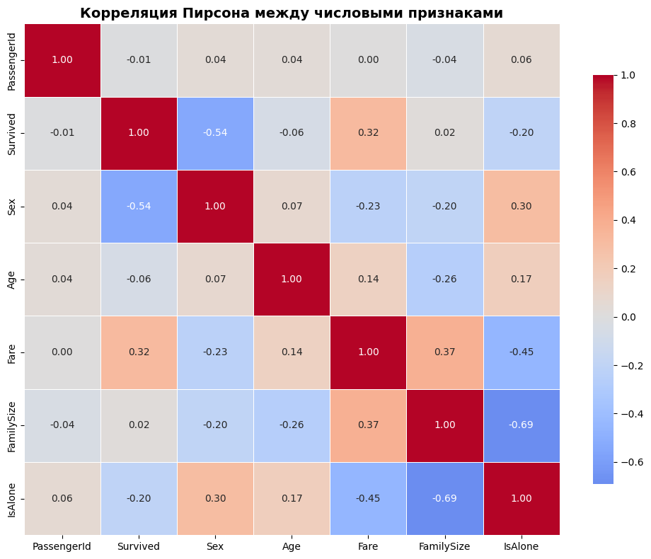

Labwork 6 Tutorial
1. Выполнение заданий
Задача очистки и трансформации данных является фундаментальным этапом в процессе подготовки данных для машинного обучения. Качественная предобработка напрямую влияет на эффективность последующего моделирования.
Цель работы: Освоить методы очистки и трансформации данных с использованием библиотеки pandas на примере реального набора данных Titanic из Kaggle.
Используемые методы
В работе были применены следующие техники предобработки:
-
Обработка пропущенных значений - заполнение медианой
-
Feature Engineering - создание новых признаков из существующих (возрастные группы, титулы, размер семьи)
-
Обработка выбросов - метод IQR и ограничение по перцентилям
2. Описание данных
Структура данных
Набор данных Titanic содержит:
-
Общее количество наблюдений: 891 пассажир
-
Количество признаков: 12 исходных + 4 созданных
-
Целевая переменная: Survived (0 = не выжил, 1 = выжил)
Признаки
| Признак | Описание |
|---|---|
| PassengerId | Уникальный идентификатор пассажира |
| Survived | Целевая переменная: выживание |
| Pclass | Класс билета (1, 2, 3) |
| Name | Полное имя пассажира |
| Sex | Пол пассажира |
| Age | Возраст в годах |
| SibSp | Количество братьев/сестёр/супругов |
| Parch | Количество родителей/детей |
| Ticket | Номер билета |
| Fare | Стоимость билета |
| Cabin | Номер каюты |
| Embarked | Порт посадки (C, Q, S) |
Статистика данных
Распределение целевой переменной:
| Класс | Количество |
|---|---|
| Не выжил (0) | 549 |
| Выжил (1) | 342 |
Пропущенные значения в исходных данных:
| Признак | Пропусков |
|---|---|
| Age | 177 |
| Cabin | 687 |
| Embarked | 2 |
3. Предобработка данных
Обработка пропусков
Возраст (Age):
# Заполнение медианой по группам (Pclass, Sex)
titanic_df['Age'] = titanic_df.groupby(['Pclass', 'Sex'])['Age'].transform(
lambda x: x.fillna(x.median())
)
Порт посадки (Embarked):
# Заполнение модой (наиболее частое значение)
titanic_df['Embarked'].fillna(titanic_df['Embarked'].mode()[0], inplace=True)
Каюта (Cabin):
# Извлечение палубы и создание категории "Unknown"
titanic_df['Cabin_Deck'] = titanic_df['Cabin'].str.extract('([A-Za-z])', expand=False)
titanic_df['Cabin_Deck'].fillna('Unknown', inplace=True)
Создание новых признаков
| Новый признак | Метод создания |
|---|---|
| Age_group | Разделение по возрасту |
| Cabin_Deck | Извлечение буквы из Cabin |
| Title | Парсинг имени (Mr, Mrs, Miss...) |
| FamilySize | SibSp + Parch + 1 |
| IsAlone | FamilySize == 1 |
# Пример создания возрастных групп
bins = [0, 12, 18, 35, 60, 100]
labels = ['Child', 'Teen', 'Young', 'Adult', 'Elderly']
titanic_df['Age_group'] = pd.cut(titanic_df['Age'], bins=bins, labels=labels)
Кодирование категориальных признаков
# Label Encoding для бинарных признаков
titanic_df['Sex'] = titanic_df['Sex'].map({'male': 1, 'female': 0})
titanic_df['Pclass'] = titanic_df['Pclass'].map({1: 'F', 2: 'S', 3: 'T'})
# One-Hot Encoding для мультиклассовых признаков (при необходимости)
# pd.get_dummies(titanic_df, columns=['Embarked', 'Title'])
4. Обработка выбросов
Метод IQR для признака Fare
Параметры обработки:
Q1 = titanic_df['Fare'].quantile(0.25)
Q3 = titanic_df['Fare'].quantile(0.75)
IQR = Q3 - Q1
lower_bound = max(0, Q1 - 1.5 * IQR) # $0.00
upper_bound = Q3 + 1.5 * IQR # $65.63
Применение:
titanic_df['Fare'] = titanic_df['Fare'].clip(lower=lower_bound, upper=upper_bound)
Ограничение по перцентилю для Age
# Ограничение возраста 95-м перцентилем
percentile_95 = titanic_df['Age'].quantile(0.95) # 54 года
titanic_df['Age'] = titanic_df['Age'].clip(upper=percentile_95)
Результат обработки выбросов:
| Признак | Мин. до | Макс. до | Мин. после | Макс. после |
|---|---|---|---|---|
| Fare | $0.00 | $512.33 | $0.00 | $65.63 |
| Age | 0.42 | 80.0 | 0.42 | 54.0 |
5. Валидация и оценка качества очистки
Метрика 1: Процент заполненных пропусков
| Признак | Пропусков до | Пропусков после |
|---|---|---|
| Age | 177 | 0 |
| Embarked | 2 | 0 |
Итог: Всего обработано 179 пропусков из 891 строки (20.09% данных).
Метрика 2: Уникальные значения в категориальных признаках
| Столбец | Уникальных значений | Наиболее частое |
|---|---|---|
| Pclass | 3 | T (3 класс) |
| Sex | 2 | male |
| Embarked | 3 | S (Southampton) |
| Age_group | 4 | Young |
| Title | 10 | Mr |
| IsAlone | 2 | 1 (один) |
Метрика 3: Корреляция признаков с целевой переменной
| Признак | Корреляция с Survived | Интерпретация |
|---|---|---|
| Sex | -0.543 | Сильная отрицательная (женщины выживали чаще) |
| Fare | 0.317 | Умеренная положительная (богатые выживали чаще) |
| IsAlone | -0.203 | Слабая отрицательная (одиночки выживали реже) |
| Pclass | -0.338* | Умеренная отрицательная (1 класс выживал чаще) |
| Age | -0.062 | Очень слабая связь |
6. Визуализация результатов
Распределение выживаемости по ключевым признакам
По возрастным группам:
| Группа | Всего | Выжило | % выживших |
|---|---|---|---|
| Child | 113 | 61 | 54.0% |
| Young | 543 | 187 | 34.4% |
| Adult | 209 | 87 | 41.6% |
| Elderly | 26 | 7 | 26.9% |
По титулам:
| Титул | Всего | Выжило | % выживших |
|---|---|---|---|
| Mrs | 125 | 99 | 79.2% |
| Miss | 182 | 127 | 69.8% |
| Master | 40 | 23 | 57.5% |
| Mr | 517 | 81 | 15.7% |
По статусу "один/с семьёй":
| Статус | Всего | Выжило | % выживших |
|---|---|---|---|
| С семьёй | 354 | 179 | 50.6% |
| Один | 537 | 163 | 30.4% |
Тепловая карта корреляций

Наиболее сильные корреляции: Sex - Survived (-0.54), Fare - Survived (0.32)
7. Выводы
- Качество предобработки
Достигнутые результаты:
Все критические пропуски (Age, Embarked) успешно заполнены
Созданы 4 новых информативных признака (Age_group, Title, FamilySize, IsAlone)
Выбросы в Fare и Age обработаны без потери значимой информации
Категориальные признаки подготовлены к кодированию
Оставшиеся ограничения:
Признак Cabin имеет 77% пропусков — заменён на индикатор наличия каюты
Признак Name не используется напрямую из-за высокой уникальности (891 уникальное значение)
- Ссылки
Итог: В ходе лабораторной работы были освоены ключевые методы предобработки данных: обработка пропусков, создание признаков, кодирование категориальных переменных и работа с выбросами. Очищенный датасет готов к использованию в задачах машинного обучения.